git
Introduction to collaborative coding

The problem
The problem
The problem
The problem
The problem

The problem
The problem
The problem
The problem
git
Why?
- keep entire project history
- fixed snapshots: commits
- for single devs
- for teams with thousands of devs
- work in parallel
How?
# initialize local repo
git init
# create file test.py
echo "print('hello world')" > test.py
# tell git to take care of test.py
git add test.py
# create a commit
git commit -m "add test.py"
git
commits and branches

git
sync with others
Setup
# tell git about the remote repo
git remote add origin \
git@github.com/user/repo.git# initial push with new remote
git push -u origin masterRegular usage
# sync changes from remote repo
git pull# sync changes to remote repo
git push
git
sync with others
git
typical workflow
- setup: create or clone repository
get up to date and create a feature branch
git checkout master git pull git checkout -b feature-X
commit early, commit often!
git add FILES git commit -m "MESSAGE" git push- Create pull request for merging
feature-Xbranch intomasterbranch (e.g., via github)
git
good habits
Use feature branches
- 1 feature = 1 branch
- commit early, commit often
- push early, push often
- get the feature branch merged asap
→ avoids conflicts
Use issues
- organize your work with issues (bugs, new features, documentation)
issues can be referenced and closed from commit messages, e.g.
git commit -m "use stable algorithm (fixes #42)"
git
hands on
- Create a github account or log in
- Go to https://github.com/andrenarchy/pull-request-please
- Create a fork
- Clone your fork:
git clone https://github.com/YOURUSERNAME/pull-request-please - Read
groupXX.txt
git
- Give your repo a DOI → citable code!
- git solutions
- also works great for LaTeX!
→ Check out Overleaf and Authorea for collaborative writing.